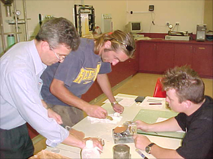

Please note Central TAFE does not conduct theses laboratory test.
Unit BCGSV5005A
Apply footings &
geomechanical design principles to domestic scale buildings
Laboratory test procedures & equipment
Students need to be familiar with the laboratory equipment
before they attempt an experiment. A maximum of three students is permitted
for group activities.
|  |
Students participation in laboratories is compulsory and anyone who misses
a lab cannot pass this unit. A second attempt is unfortunately
not possible. Please be aware of this!
There are many sites on the Internet which provides you
with useful information. Some Internet sites are listed below for additional information on the
performance of the experiments that we'll carry out. |
ASSESSMENT 1
Experiment 1 - Soil identification test.
Report 1
Each student has to collect two different soil samples (not clean sandy
soils) and to describe and classify them. Some additional soil sample
that you need to classify are provided in the lab.
Click here for information that is required to write up your Report 1. (Click here
to access
the Finger Rub Experiment and browse through the other activities).
Experiment 2 - Particle size distribution (sieve analysis)
Report 2
The purpose of this experiment is to determine the grain size distribution
of a coarse grained soil using a sieve analysis.
Click here
for a sieve analysis simulation. Do two (2) computer simulation test. The computer simulation will be demonstrated in class.
The report should include all data and a grain size distribution curve
must be plotted on the graph
by connecting the points with a smooth curve (best drawn with a French
curve). Determine the coefficient of uniformity (U=D60/D10).
Classify the soil in accordance with the Unified Soil Classification System
USCS. If the particle size distribution is not done in the laboratory and the simulation test is used for Report 2 then use this special simulation-chart
ASSESSMENT 2
Experiment 3 - Liquid limit / plastic limit tests
Report 3
The objective of the liquid limit / plastic limit test (also called Atterberg
limits test) is to obtain basic information about the soil to estimate
strength and settlement characteristics. It is the primary form of classification
for cohesive soils.
Students should be familiar
with the test procedure prior to the actual lab test.
Experiment 4 - Soil texture class test
Report 4
The purpose of this test is to find the percentage distribution of sand,
silt and clay in a soil sample. Each student need to collect a soil samples
(not pure sandy soil), conduct a glass jar test and determine the soil
type using the soil textural classification chart provided. Refer to notes
and click on Soil texture class
test.
Here are some additional links to web sites
General information on soil
mechanics
|